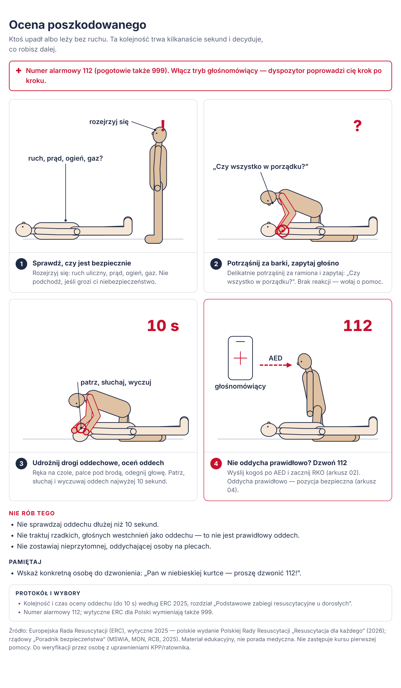
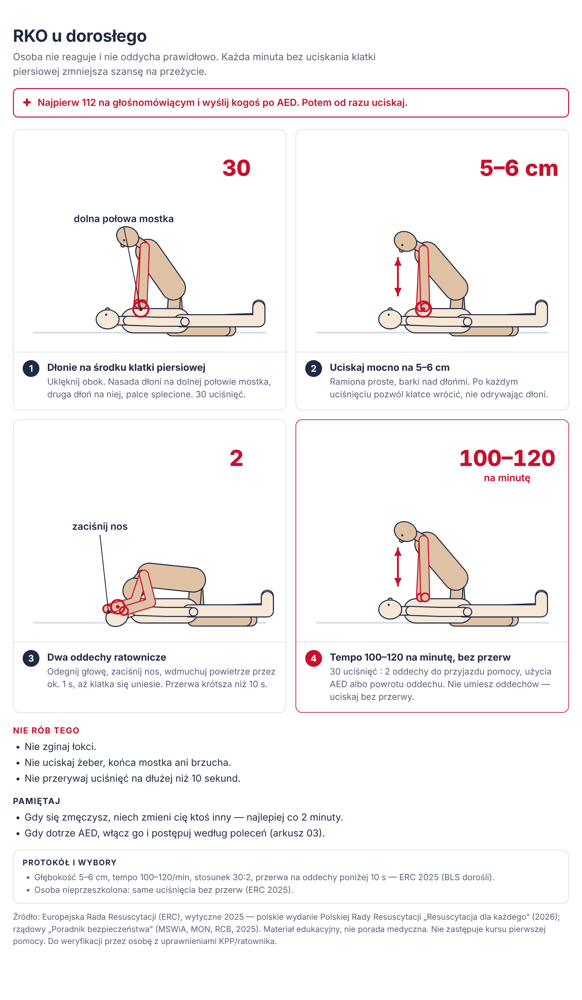
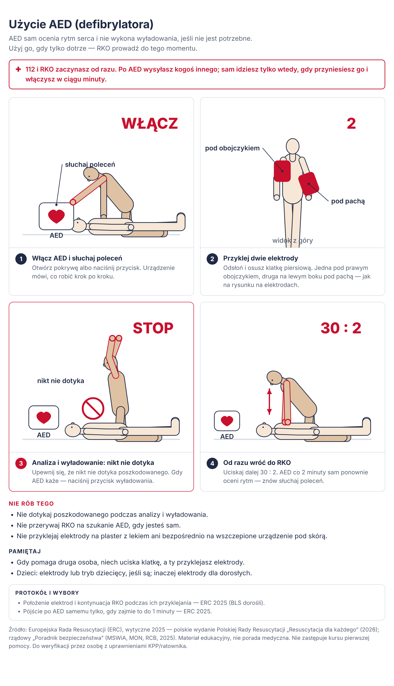
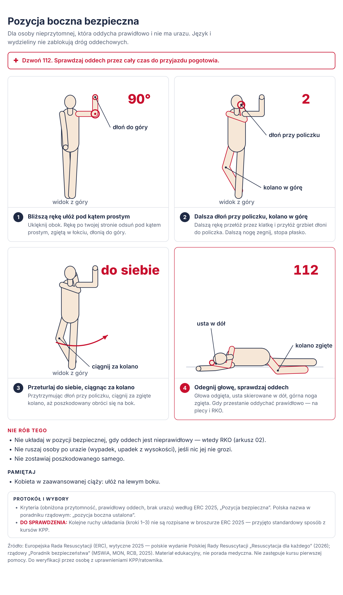
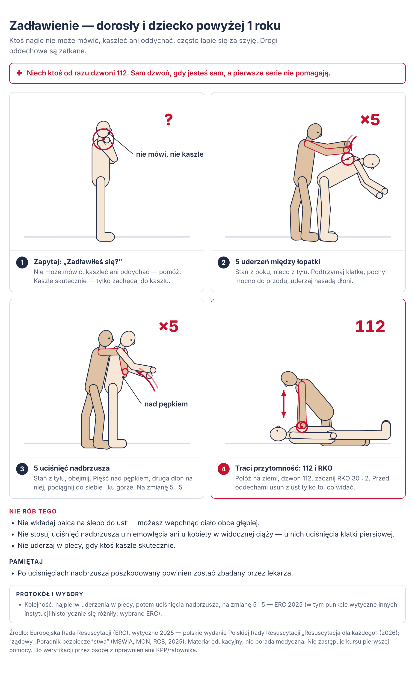
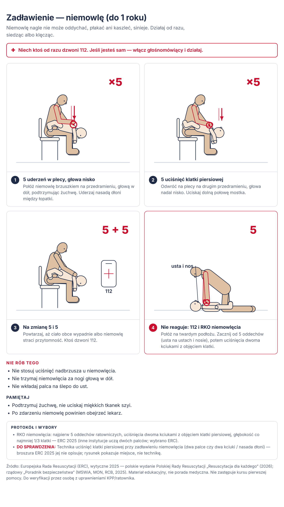
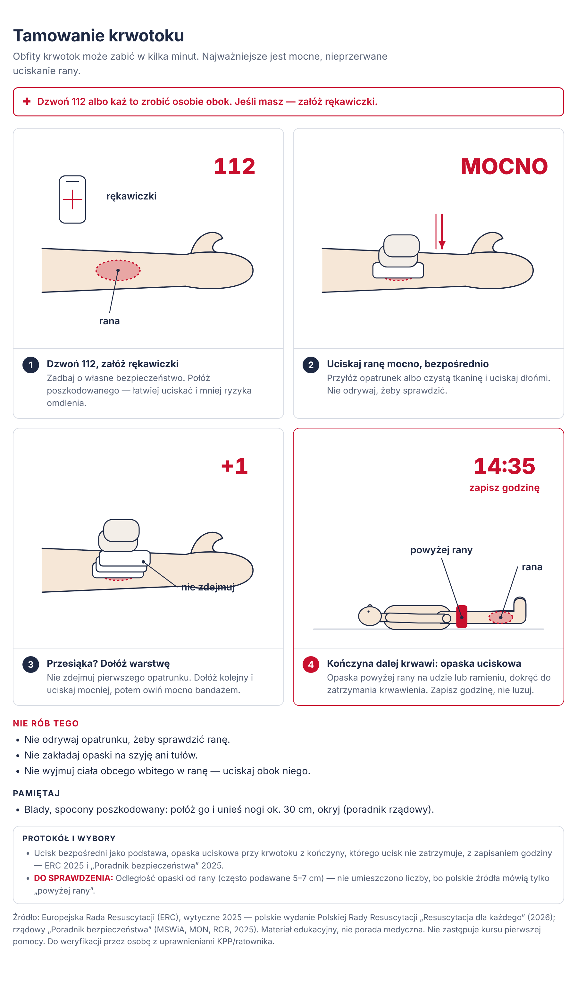
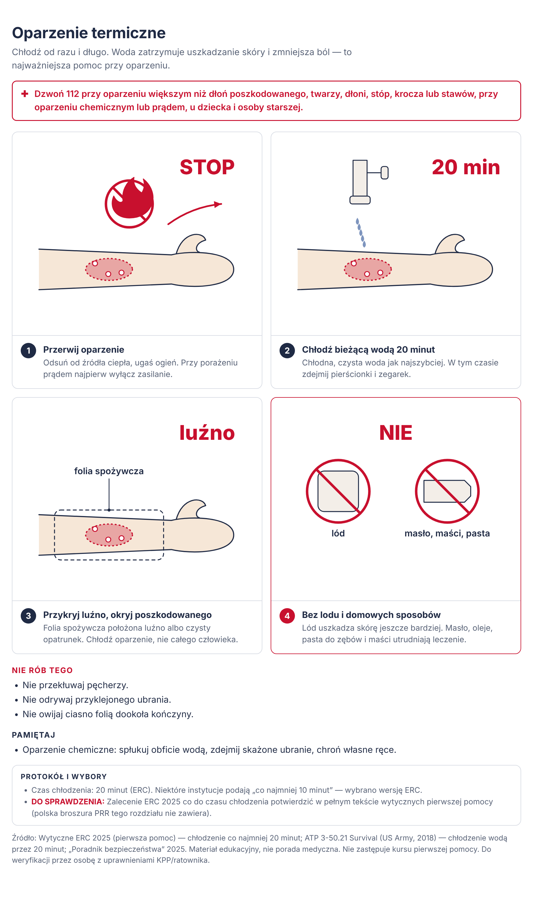

Osiem arkuszy z numerowanymi panelami. Kliknij, aby otworzyć wersję animowaną; wersje do druku są w katalogu png/. Materiał edukacyjny, nie porada medyczna — do weryfikacji przez osobę z uprawnieniami KPP/ratownika. Źródła: ZRODLA.md.
png/







